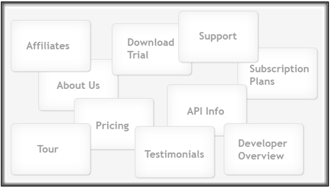

Shakshat Virtual Lab 
INDIAN INSTITUTE OF TECHNOLOGY GUWAHATI
Open Card Sorting ( * refer procedure below )
Refer to the figure below. You can see some cards that have names of the website sections written on them. Create such cards and use them with five people for card sorting. These participants are supposed to sort them into groups of their choice and also name these groups.

Please observe following things from the data obtained
What names do the participants choose for section titles?
What is the average number of categories created by participants?
Were there sub-categories or sub-groups?
Does the content flow logically?
Closed Card Sorting ( * refer procedure below )
Refer to the figure below. Some cards are shown with names of the website sections written on them. Also some categories are predefined in blue color. Create such cards and use them with five people for card sorting. The participants are supposed to sort them into the group of their choice.

Please observe following things from the data obtained
Which cards do the participants put under each category?
Do you observe any pattern in card sorting?
Can you arrive at some solution for information flow design?
Conducting Generic Card Sort
Making cards ready
List the content topics or types of information that you are likely to have on the site or list the most important types of content on your current site.
-
Write each topic on a separate index card. Limit yourself to 100 cards or less. (About 50 is a good number.)
-
Have blank cards available for participants to add topics and to name the groups they make when they sort the cards. Consider using a different colored card for having participants name the groups.
-
Plan about one hour for each session - longer if you have many cards.
-
Arrange for a space where the participant has enough room to spread the cards out on a table. A conference room works well.
-
Plan to have someone take notes as the participant works and thinks aloud.
Sorting Session
Show the participant the set of cards and explain that you are asking for help to find what categories of information should be on the site's home page and what those categories should be called.
-
Ask the participant to talk out loud while working. You want to understand the participant's thoughts and rationale.
-
Let the participant add cards - for example, to indicate lateral hyperlinks or additional topics. Let the participant put cards aside to indicate topics the participant would not want on the site. Minimize interruptions but encourage the participant to think aloud.
-
Give the participant a stack of different colored cards and ask them to use the colored card to name each group.
Analyzing Data
Write down the names that participant gave to each grouping and the numbers of the cards the participant included under that name
-
Create a computer file for each session. Working from your original list of topics, move topics around to recreate each participant's groupings and enter that participant's name for the groupings.
-
Use your notes and recordings of the participants' names and card numbers under each person's name to find commonalities from different sessions.
-
For a more detailed analysis, consider using an Excel spreadsheet to show the relationship between the cards or use one of the available software programs to analyze your data./p>
( Reference : http://www.usability.gov/methods/design_site/cardsort.html )